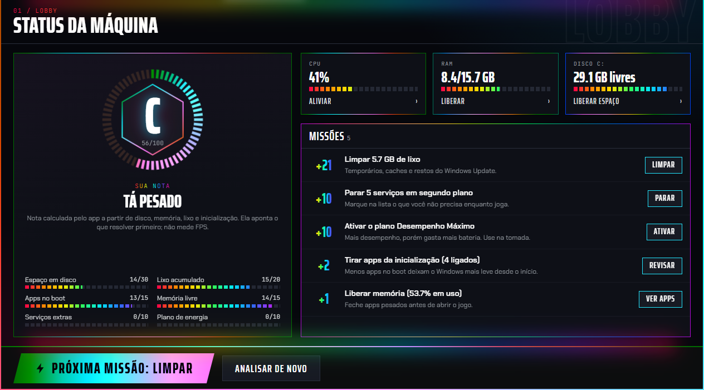

Uma nota de 0 a 100
Mostra o que resolver primeiro. A nota avalia o estado do PC e não mede FPS.
- Espaço em disco 30
- Lixo acumulado 20
- Apps na inicialização 15
- Memória livre 15
- Serviços extras 10
- Plano de energia 10
Veja o que está pesando, limpe o que sobrou e feche o que não precisa antes de jogar. Mudou de ideia sobre o BOOST? Um botão desfaz.
Baixar para Windows
Nada é alterado ao abrir o app. Você marca o que quer e confirma.
Mostra o que resolver primeiro. A nota avalia o estado do PC e não mede FPS.
Você vê o tamanho de cada uma antes e marca o que sai.
Segure o botão para aplicar o que você marcou. O plano de energia muda para Desempenho Máximo.
Salve seu trabalho antes: os apps marcados fecham na hora.
Restaurar devolve o PC ao estado anterior ao BOOST. Desinstalar o app faz o mesmo.
Serviços parados continuam desativados depois de reiniciar, até você clicar em Restaurar.
Liste o que abre junto com o Windows e desligue cada item. Ligue de novo quando quiser.
Veja quais apps usam mais RAM e CPU, e quais pastas e arquivos grandes ocupam seu disco.
O Windows vai mostrar dois avisos. Os dois são esperados.
Execute o arquivo PC-Optimizer-Setup-0.1.0.exe que você baixou.
Em "O Windows protegeu o computador", clique em Mais informações e depois em Executar assim mesmo. O aviso aparece porque o app ainda não tem assinatura digital.
O app precisa dessa permissão para mexer em serviços e no registro. O pedido volta sempre que você abre o programa.
Depende do PC e do jogo, e não prometemos um número. O app libera memória e processador e deixa o Windows em modo de desempenho. O ganho é maior em máquinas com muita coisa aberta em segundo plano.
Não. Tudo roda no seu PC, e a comunicação interna do programa fica presa à própria máquina.
Apps sem assinatura digital que pedem administrador às vezes geram esse alerta. Confira o arquivo pelo código abaixo. Se ele bater e você confiar na origem, libere o backend.exe no antivírus e abra o app de novo.
Funciona. Desempenho Máximo gasta mais bateria, então use na tomada e clique em Restaurar quando terminar de jogar.
Pelas Configurações do Windows, em Aplicativos, usando a mesma conta em que você rodou o BOOST. A desinstalação restaura serviços, registro e plano de energia antes de remover o programa.
B71D92CA95261D88C892E6966D0A480BF344A5DCE74CC6896D1B5454B50F5A97